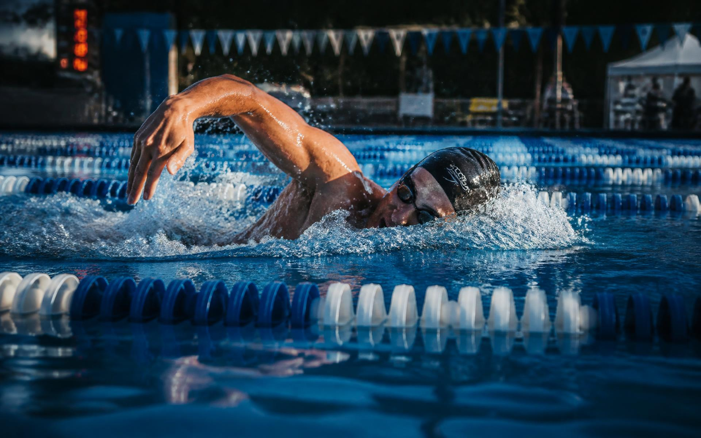
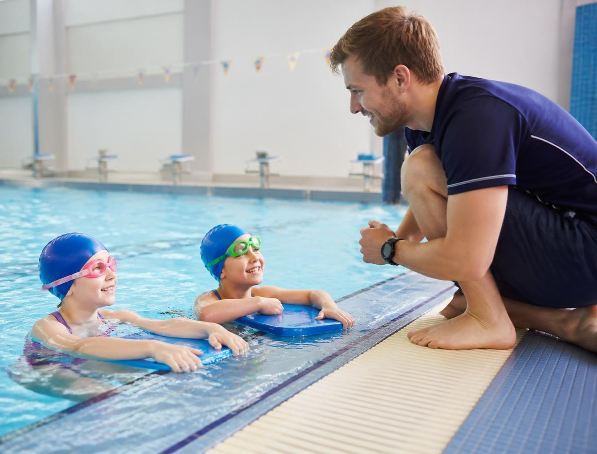

Learn to Swim
Ages 4–12. Water confidence, floating, breathing and the four strokes, taught in shallow water with two coaches per lane.
Mon–Sat · 45 minutes

Mombasa · Est. 2009
From a first float to a first national qualifying time, Tidewater pairs every swimmer with a certified coach, a small squad and a plan that fits their week.
Why Tidewater
Two thirds of the families who walk through our gate come to us for one reason: their child cannot yet be safe in water. We start there. Every learner — four years old or forty — works through the same clear milestones, so progress is something you can see rather than hope for.

Three pathways
Every swimmer is assessed in the water before joining, so nobody is placed in a group that moves too fast — or too slowly.
Ages 4–12. Water confidence, floating, breathing and the four strokes, taught in shallow water with two coaches per lane.
Mon–Sat · 45 minutes
Never learned, or learned badly? Beginner and technique groups for adults, plus quiet early-morning sessions for nervous starters.
Tue, Thu, Sat · 60 minutes
Structured training blocks, video stroke analysis, pace work and meet preparation for club and school-level competitors.
5 sessions / week · 90 minutes
Last season
From our families
My daughter refused to put her face in the water. Eight weeks later she swam a full length and asked to join the squad.
I learned to swim at 43. The 6 am adult group is patient, unhurried and genuinely kind about it.
The video analysis fixed a catch problem two other clubs never spotted. I took three seconds off my 100 m free.
Trials run every weekday evening and Saturday morning. Bring goggles — we supply everything else.